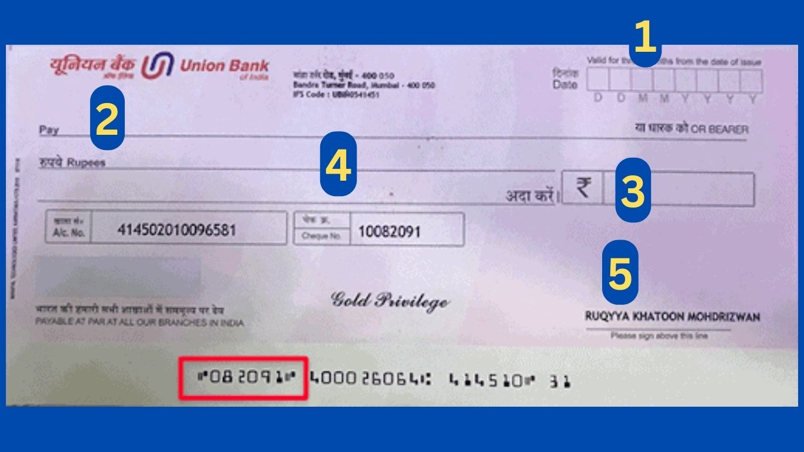

Introduction
Welcome to our complete guide on “how to fill a cheque of Union Bank“. In this step-by-step guide, we will walk you through correctly filling out a cheque for Union Bank of India to ensure seamless transactions. Whether you’re a new customer, our guide will provide you with all the necessary information to complete your cheques confidently. Let’s dive in!

{kind=link}
Please Read Also:-
Step 1: Collect the Necessary Materials
Before you begin filling out your Union Bank cheque, make sure you have the following materials handy:
- A Union Bank cheque
- A pen with permanent ink ( Blue or Black only)
- The details of the payee (the person or organization you’re paying)
Step 2: Date the Cheque
Start by locating the designated area for the date on your Union Bank cheque. It is usually positioned at the top right corner. Write the current date in the specified format (e.g., DD/MM/YYYY).
Step 3: Fill in the Payee Information
In this step, you will provide the necessary details of the payee. Locate the line that reads “Pay to”,” the Order of” or a similar phrase on the cheque. Write the name of the individual or organization you wish to pay. Make sure to write legibly and double-check the accuracy of the information to avoid any errors or complications.
Step 4: Define the Amount in Numerical Form
On the line preceded by a currency symbol (e.g., “$” or “₹”), write the exact amount you want to pay in numerical form. Ensure that you write the amount clearly and close to each other, using both digits and decimals. It’s crucial to be precise and avoid any confusion when transcribing the amount.
Step 5: Write the Amount in Words
Beside the line that begins with “Amount in Words” or a similar phrase, write the payment amount in words. This step acts as a double verification and helps to prevent any differences between the numerical and Words form of the payment Vlue. Be careful and avoid any spelling mistakes or unclear handwriting that may cause misunderstandings.
Step 6: Memo (Optional)
If desired, you can include a memo on your Union Bank cheque. The memo is a brief note to provide additional information about the payment, such as an invoice number or a reference. This step is optional but can be useful for record-keeping purposes.
Step 7: Sign the Cheque
The final step is to sign the cheque. Locate the designated signature line commonly found at the bottom right corner of the cheque. Sign your name exactly as it appears on your bank account. Ensure that your signature is clear, as a mismatched or unclear signature may lead to difficulties during the transaction process.
-
How to apply chequebook in Union Bank?<div jsname="Q8Kwad" class="aj35ze" style="background-image: url("data:image/svg+xml,<svg focusable=\"false\" xmlns=\"http://www.w3.org/2000/svg\" viewBox=\"0 0 24 24\"><path fill=\"%2370757a\" d=\"M16.59 8.59L12 13.17 7.41 8.59 6 10l6 6 6-6z\"></path>
Submit the Application to Branch Manager.
Can I get a chequebook within 3 days in the Union Bank of India?
Yes
How can I check the status of my cheque book in the Union Bank of India?
Visit a Branch or Through Internet banking
Does Union Bank of India accept other bank cheques?
Yes, You Can Deposit any Bank cheque in Any Bank.
Conclusion
Congratulations! You have successfully learned How to Fill a Cheque of Union Bank of India. Following this step-by-step guide, you can confidently complete your cheques, ensuring accurate and seamless transactions. Remember to double-check all the details before submitting your cheque to avoid any Payment issues. If you require further assistance or have any questions, don’t hesitate to contact Union Bank’s customer support.